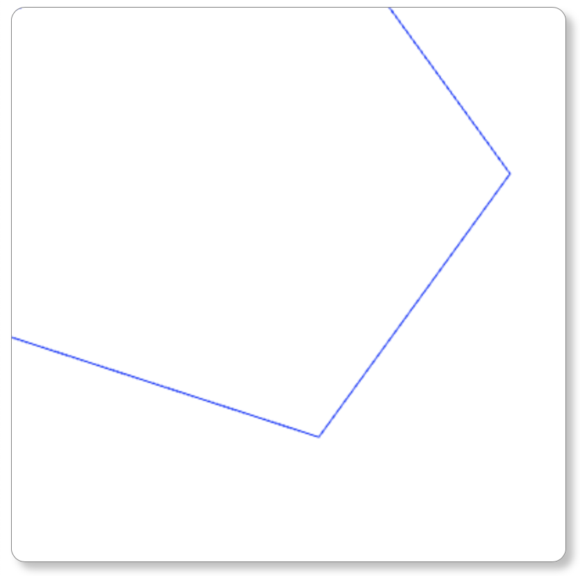
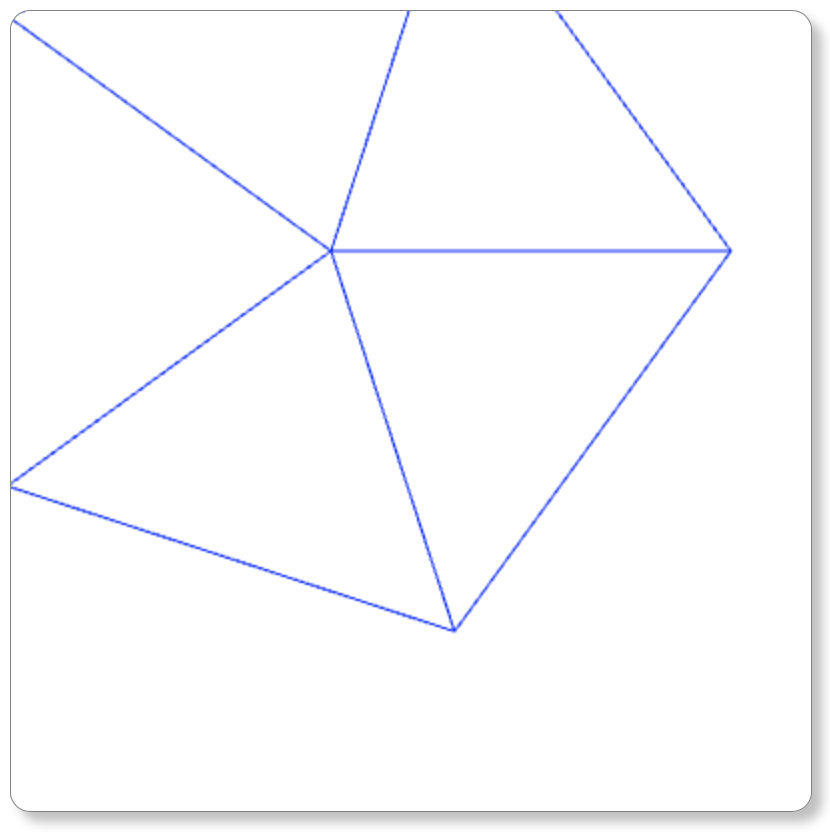

Created by Danielle Laganiere - 4/5/21
Assignment:
Feature Page Navigation:
Supporting Code Files:
This lab utilizes the canvas previously produced in Lab 0 along with elements of WebGL to allow for the drawing of more complex objects. In this case, the object created was a 3D cylinder with a height of 1 and a radius of 1. Using user inputs, the cylinder can have any number of sides and can optionally have end caps. There is also an option for the user to download the current configuration via .coor and .poly files. These can be named anything the user chooses. This will continue to be used and manipulated in future labs to allow for futher complex objects.
Number of sides:
The first input box, labeled "Number of sides:" determines the number of sides the cylinder will have.
The larger the number of sides, the more precise and round the cylinder will seem. In order to get a proper
shape, there must be a minimum of 3 sides.
Draw Endcaps:
The second input, a boolean pull-down labeled "Draw end caps?" determines whether or not the cylinder will
have solid caps on each end. If there are no endcaps drawn, just the outline of the cylinder will be shown.
Draw Button:
The draw button uses the previous two inputs to create the cylinder image. It must be pressed each time a new cylinder
wants to be created.
Scale:
The scaling inputs allow the user to alter the cylinder's dimensions. By adding a value, the cylinder will shrink or expand
on that axis by that amount. If the scaling factor is less than 1, the shape will shrink, if it is greater than 1, it will
expand. It makes no difference if the inputted number is positive or negative.
Translate:
The translation inputs allow the user to move the cylinder in space. By adding a value, the cylinder will shift that amount
across the canvas. Each 0.1 accounts for 5% of the canvas's total width, height, or depth, so it best to keep the value between
-1 and 1 to ensure the cylinder does not leave the boundaries of the canvas. Adding a positive number in the Tx box will shift the shape
in the positive x direction, and adding a negative value in the Tx box will move it in the negative x direction. The same holds
true with y and z, although it is difficult to see changes in the z direction from this viewpoint. It should be noted
that changes in the z direction may lead to lines of the cylinder being cut-off, affecting the completeness of the cylinder.
Color:
The color inputs allow the user to alter the cylinder's RGB values. By adding a value, the cylinder will change color, changing the
corresponding color value to the percentage value corresponding to the input. Entering 0's in all fields will make the shape black and entering
1's in all fields will make the shape white, which seems invisible against the white canvas.
Another "Draw" button can be found below the color inputs. This button works identically to the previous draw button.
Download:
The bottom two inputs allow the user to download the coordinates and order of the triangles forming
the cylinder. The user can choose to specify the name the file will save as, although it will save as "unknown.txt" if unspecified.
The .coor file holds the number of vertices along with the numbered coordinates. The .poly file holds the number of lines,
along with the name of the triangles and the coordinates that create it. These points are labeled using the numbered order
system from the .coor file.
Shown above are the images for a 5-sided cylinder, both with and without endcaps. This can be repeated for any n greater or equal to 3.
 The same 5-sided cylinder is shown again, but translated 0.2 in the negative x direction (Tx = -0.2) and 0.4 in the postitive y direction (Ty = 0.4).